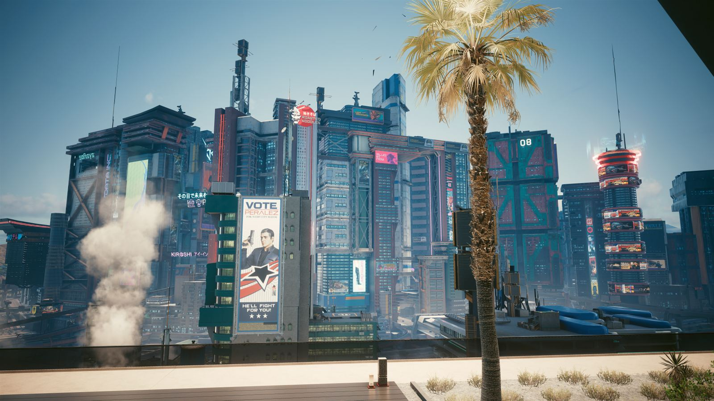
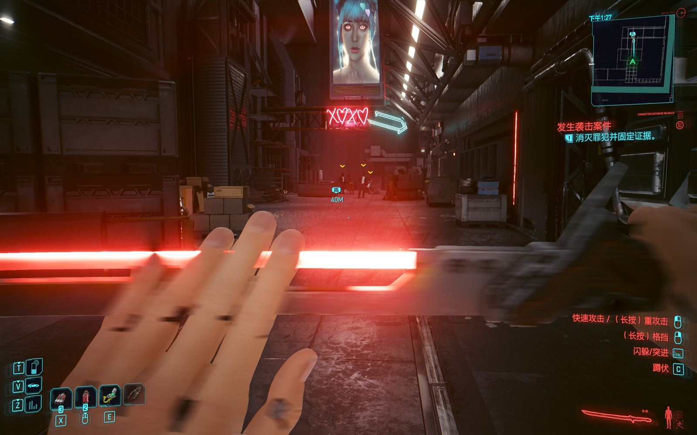
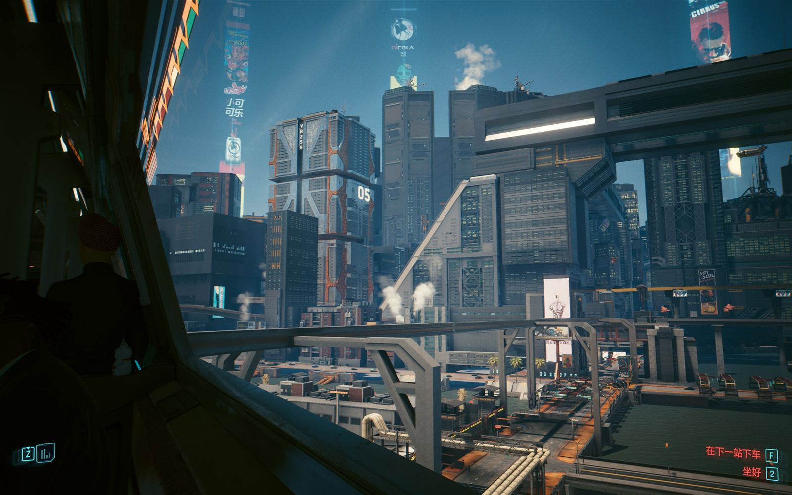
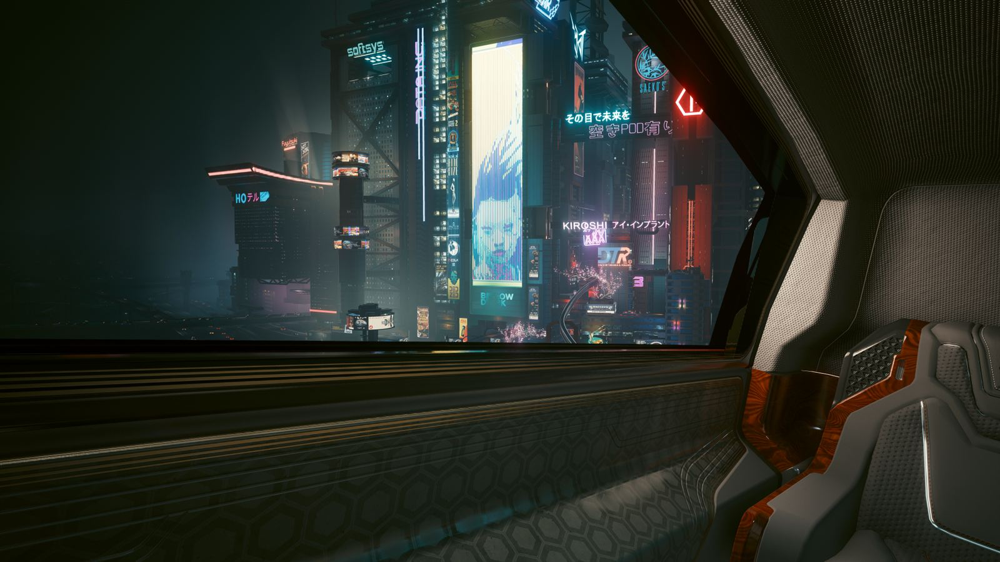

四种风格，排成一部阶级史
夜之城不是“随便堆霓虹”的赛博朋克。概念团队给这座城市写了一份编年史：四个时期、四种审美、四个阶层。你走在街上看到一栋楼，能立刻判断出它属于哪个年代、住着什么人。
01先定历史，再画建筑
概念团队的做法不是直接画“未来”，而是先假设 2020 到 2077 之间发生过经济崩溃、战争、重建，再让每种风格对应一个阶段的社会情绪。
所以这座城市看起来是分层堆积的：最穷的街区停在最节俭的那个年代，企业总部停在最嚣张的那一年，而富豪的私人空间永远是最新的一版。风格在这里不是装饰选择，是时间与钱共同留下的地层。
这种做法解决了一个常见问题：绝大多数科幻美术都太“新”。而真实城市是旧的、修补过的、风格混杂的。夜之城的好看来自这种不整齐。
四风格速查
- 熵增主义穷困年代的实用主义，一切以能用为准
- 刻奇主义经济回暖后的浮夸，圆角、亮色、装饰过剩
- 新军权主义企业时代的秩序感，冷硬、垂直、军事化
- 新刻奇主义超级富豪的定制审美，昂贵材料加低俗想象
02四种风格，四种阶层

熵增主义 ENTROPISM
对应最困难的年代。经济崩溃之后，审美让位给生存：外露的混凝土、廉价的复合材料、能用就行的结构。颜色单调，轮廓刻板，几乎不做任何装饰，因为装饰要花钱。
你在沃森的旧楼、太平洲的烂尾楼里看到的都是这一层。它不是“穷人的风格”，而是所有人一起穷过的那段时间留下的底子。

刻奇主义 KITSCH
局势好转之后，人们有余钱想显眼。线条变圆，颜色变亮，汽车和建筑都开始“笑”。一栋亮黄色、开圆形窗的楼，就是那个年代的化石。
这一层是夜之城最有人气的地方：它廉价、过度、俗气，但至少还是给普通人准备的。

新军权主义 NEOMILITARISM
企业掌权之后，建筑开始像武器。垂直、深色、正面、没有多余开口；材料看起来贵且难拆。它是“秩序”的视觉版本：让人一眼就知道这里不欢迎闲人。
公司广场和荒坂的建筑属于这一层。夜之城黄也是从这里长出来的——警告色被当成品牌色用，本身就是一种态度。

新刻奇主义 NEOKITSCH
为超级富豪量身定做：把刻奇主义的俗气用最贵的材料和工艺重做一遍。镀金、真皮、大理石配全息投影，审美上依然媚俗，只是不再是穷人能媚的俗。
这一层最少出现在街上，因为它属于顶层公寓、私人会所和那些你只能隔着玻璃看到的地方。
03夜之城黄，和它周围的颜色
整套视觉系统只有一个真正的主角：那种偏绿的、几乎会刺眼的黄。它原本是工业警告色，在这里被提拔成城市的主色——警告变成了招牌，危险变成了品牌。
为什么这个配色有效
黄与黑是自然界最高对比度的组合之一，适合被霓虹灯、雨夜和廉价全息广告反复污染。青色和品红则分别承担“数字世界”和“身体世界”，两者叠在一起时产生的分色偏移，就是这套视觉里最有辨识度的故障感。
本站的配色也直接取自这套系统——你在页面上看到的切角、扫描线和 RGB 分色，都是对这套语言的转写。
04五个反复出现的视觉母题
巨构建筑
一栋楼住几万人，电梯像地铁。垂直的贫民窟是这座城市最诚实的一张自拍。
全息广告
天空被租出去卖东西：巨大的鱼、巨大的脸、巨大的酒。夜里它们比星星亮。
义体美学
接口、缝线、镀铬关节。身体被设计成可维修的，也就被设计成可折旧的。
故障与扫描线
画面会跳帧、会撕开、会红蓝分离。它在提醒你：你看到的可能是被编辑过的。
东方元素
日本街的招牌、汉字霓虹、拉面摊。不是异国情调，是全球资本流向留下的地名。
雨与蒸汽
光必须有介质才好看。雨、雾、蒸汽把霓虹变成体积，也把城市变成一口锅。
05声音也是布景
游戏里的电台不是背景音，是世界观的一部分：每个频道对应一种听众、一种阶级、一种情绪。你在车里切台的动作，相当于在换一个邻居。
原声带请来了真实的音乐人参与，而不是全部由配乐师代写：Run the Jewels、Grimes、A$AP Rocky、Refused、Gazelle Twin 等都贡献了游戏内曲目。这让电台听起来真的像电台，而不是“游戏音乐”。
2.0 更新又加了三家新台，其中一家专门播放社区玩家创作的歌，DJ 由演员 Sasha Grey 配音；另一家由 Idris Elba 重新混音——他在资料片里饰演所罗门·里德。
配乐与音效
- 配乐Marcin Przybyłowicz、P.T. Adamczyk、Paul Leonard-Morgan
- 2.0 新台89.7 Growl FM（社区曲目）、Impulse 99.9（Idris Elba 混音）、107.5 Dark Star
- 音效设计义体启动、破解上传、HUD 提示都有独立音色，构成一套“听得见的界面”